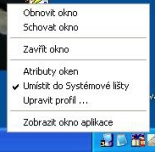
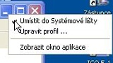

|
|
Úvod
TrayIt! umí uspoøit prostor lišty Hlavního panelu pro minimalizovaná
okna programù. Pro každou aplikaci TrayIt! vytvoøí nevelkou ikonu v
Systémové lištì.
(Oblast Systémové lišty se nachází vedle umístìní hodin). Když
aplikujete minimalizaci okna, tato ikona zobrazuje použití aplikace v Systémové
lištì místo normálního zobrazení "minimalizovaného obdélníku" v Hlavním panelu.
Toto je zvlášt užiteèné pro prostøedí typických úkolù pøi stále spuštìných programech v PC, jako jsou velmi oblíbené: E-mailový klient, Real Player, atd...
Použití TrayIt!
TrayIt! bìží v prostøedí Windows 95/98/Me, NT/2000/XP/Vista a nevyžaduje
instalaci.
Jednoduše vytvoøte novou složku a do ní pøetáhnìte TrayIt!.exe a TrayIt!.dll. Když
spustíte TrayIt! zobrazí se dialog s krátkým návodem na použití.
Mùžete si vybrat spuštìní TrayIt! se spuštìním systému pøi výbìru "Nastavení" a
zmìnit "Spuštìní TrayIt!" ve startovním boxu.
|
  |
Hlavní aplikaèní nastavení
Mùžete si pøizpùsobit chování TrayIt! výbìrem následujících možností z nabídky "Úpravy/Nastavení" :
- Spustit TrayIt! pøi startu - vytvoøí zástupce k aplikaci
TrayIt! v uživatelské startovní složce.
- Spustit jedním klikem - když je volba vypnutá, potøebujete dvojklik
na ikonu v Systémové lištì ke spuštìní aplikace TrayIt!.
- Seskupení podobných ikon jiných aplikací - TryIt! umí sdružit podobná okna zobrazující se se stejnou ikonou v lištì a zpøístupnit skupinu.
- Minimalizovat v popøedí, aktivovat na Pozadí - kde je tato
volba zapnutá, kliknutím na ikonu v Systémové lištì minimalizujete pøidružené
okno jen když je již umístìné v popøedí a jinak ho umístíte ho do popøedí.
Hlavní možnosti pro profily oken:
- Porovnání vzoru s názvem okna pøi vytvoøení ikony v Systémové lištì
- pokud je tato volba aktivovaná mùžete specifikovat vzor názvu který TrayIt!
porovná s názvem okna aplikace.
TrayIt! hledá podøetìzec v titulku okna, který porovná se vzorem. TrayIt!
vyhledává vzory z leva do prava a zastaví se u prvního nalezeného výsledku.
Vzory nerozlišují velká èi malá písmena. '*' a '?' pro zkratky jsou povoleny.
'^' jako první znak, obrátí vzor. '|' (separátor) oddìlí alternativy.
Pøíklad: Tento poèítaè|Ovládací panely pøidá specifikaci k Prùzkumníkovy a
vytvoøí ikonu v Systémové lištì jen ke dvìma složkám.
- Minimalizace pøi startu - TrayIt! minimalizuje vybrané okna pøi startu. Úèinnost této volby je velmi podobná výbìrem "Spustit:Minimalizovanì" pøi použití programových zkratek. Prosím, používejte, když poslední nepracuje správnì.
- Ovládat typy aplikací SDI jako Excel, PowerPoint nebo MS Project - TrayIt! bude správnì ovládat aplikace, které mají jen jedno okno aplikace. Vytvoøí vícenásobné poutko ve Správci úloh ve správné oblasti.
Pokud je TrayIt! spuštìný ruènì jako by potlaèoval spouštìcí dialogové okno,
jen vytvoøí zástupce a spustí TrayIt! používající ruèní pøepínaè.
TrayIt! je úplnì FREE a pokud víte o dobré stránce, prosím sdìlte
nám to a vystavte tam TrayIt!
ZØEKNUTÍ SE ODPOVÌDNOSTI -- ÈTÌTE PØED INSTALACÍ TRAYIT!
THE SOFTWARE IS PROVIDED "AS-IS" AND WITHOUT WARRANTY OF ANY KIND, EXPRESSED, IMPLIED OR OTHERWISE, INCLUDING AND WITHOUT LIMITATION, ANY WARRANTY OF MERCHANTABILITY OR FITNESS FOR A PARTICULAR PURPOSE. IN NO EVENT SHALL THE AUTHOR OR HIS COMPANY BE LIABLE FOR ANY SPECIAL, INCIDENTAL, INDIRECT OR CONSEQUENTIAL DAMAGES WHATSOEVER (INCLUDING, WITHOUT LIMITATION, DAMAGES FOR LOSS OF PROFITS, BUSINESS INTERRUPTION, LOSS OF INFORMATION, OR ANY OTHER LOSS) , WHETHER OR NOT ADVISED OF THE POSSIBILITY OF DAMAGE, AND ON ANY THEORY OF LIABILITY, ARISING OUT OF OR IN CONNECTION WITH THE USE OR INABILITY TO USE THIS SOFTWARE.
TENTO SOFTWARE JE POSKYTOVÁN "TAK JAK JE" A BEZ ZÁRUKY JAKÉHOKOLIV DRUHU, VYJÁDØENÝM, MLÈKY PØEDPOKLÁDANÝM NEBO JINAK NEVYJÁDØENÝM, VÈETNÌ A BEZ OHRANIÈENÍ, NÌJAKÉ ZÁRUKY OBCHODOVATELNOSTI NEBO ZDATNOSTI PRO ZVLÁŠTNÍ ÚÈEL. V ŽÁDNÉM PØÍPADÌ AUTOR NEBO SPOLEÈNOST NEMÙŽE BÝT ODPOVÌDNÝ ZA NÌJAKÉ ZVLÁŠTNÍ, NAHODILÉ, NEPØÍMÉ NÁSLEDNÉ ŠKODY VÙBEC (VÈETNÌ, BEZ OHRANIÈENÍ, NÁHRADY ŠKODY ZA UŠLÝ ZISK, PROVOZNÍ PORUCHU, ZTRÁTU INFORMACÍ NEBO JINOU ZTRÁTU) , JESTLI NEBO PO UPOZORNÌNÍ NA MOŽNOSTI POŠKOZENÍ, A NÌJAKÝCH TEORIÍ ODPOVÌDNOSTI, VYVSTÁVAJÍCÍ V SOUVISLOSTI S POUŽÍVÁNÍM NEBO NESCHOPNOSTÍ POUŽÍT TENTO SOFTWARE.